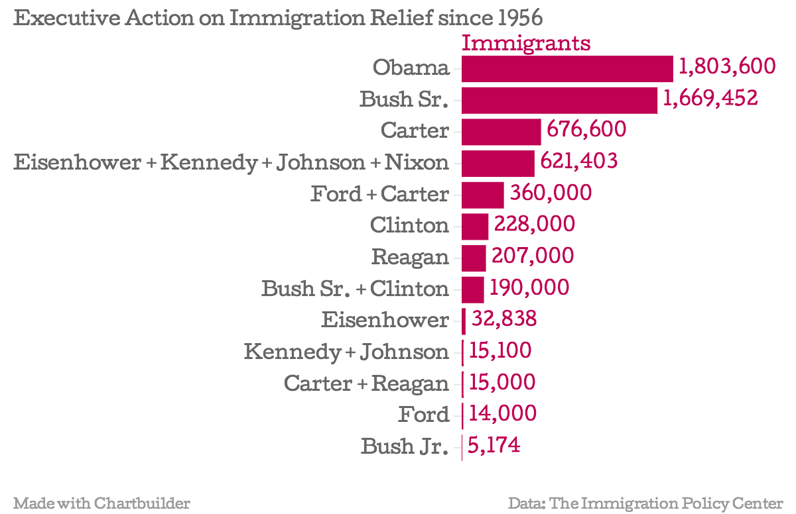

When President Barack Obama used his legal executive authority to announce his new immigration plan on Nov. 20, 2014, many opponents in Congress charged that this move was similar to a king or a monarch abusing their power.
But for over half a century, American presidents have used their executive powers to relieve immigrant individuals and families of deportation. In fact, every president since Dwight D. Eisenhower has taken executive action on immigration.
Democratic and Republican presidents alike have passed executive actions to allow immigrants to stay in the U.S. without the fear of getting deported, but perhaps what's more surprising is that after Obama, George H.W. Bush – a Republican president – provided relief for the second-highest amount of immigrants.
Here's a chronological breakdown of those numbers according to an October 2014 report from the American Immigration Council. Combinations of presidents represent executive actions that were passed down and continued from one president to another.
As the numbers show, Obama has so far provided 1.8 million childhood immigrant arrivals with deportation relief under Deferred Action for Childhood Arrivals, or DACA (2012) – accounting for more than a third of total immigration relief since 1956. Next in line is Bush Sr. – and that 1.6 million doesn't even include his deferred deportation plan for 190,000 El Salvadorans that President Bill Clinton continued in 1992.
Bush Sr. was able to pass sweeping immigration reform because of bipartisanship that existed in Congress at the time. Back then, both sides of the aisle agreed the immigration system needed a major revamp, and Bush Sr. acted unilaterally to protect families from breaking up through deportation. Now, Obama has the challenge of working with a polarized Congress, where many of his bold initiatives result in gridlock on Capitol Hill, ultimately leading to a government shutdown.
In total, Obama’s new immigration action will provide deportation relief for 5.67 million immigrants, including 4 million immigrant parents who will be protected if they have been in the U.S. for at least five years and have kids who are citizens or legal residents by green card. The amount of immigrants that fall under his recent executive action is strikingly higher than any other group of immigrants who received relief under previous presidents since the Eisenhower era. But while Republican opponents in Congress get ready to tussle with Obama on his plan, it's difficult to overlook the massive immigration overhaul carried out from the late '80s to early '90s by a president from their own party.
| President | Year(s) | Number of People Relieved | Relief |
|---|---|---|---|
| Eisenhower | 1956 | 923 | Parole for orphans into custody of military families seeking to adopt them, pending Congressional legislation giving them permanent legal status. |
| Eisenhower | 1956-58 | 31,915 | Parole for Hungarians who escaped after failed uprising against Soviets in 1956. |
| Eisenhower + Kennedy + Johnson + Nixon | 1959-72 | 621,403 | Parole for Cuban asylum seekers fleeing Cuban Revolution. |
| Kennedy + Johnson | 1962-65 | 15,100 | Parole of Chinese who fled to Hong Kong in early 1962. |
| Ford + Carter | 1975-79 | 360,000 | Parole of Indochinese from Vietnam, Cambodia and Laos, in 10 authorizations of extensions over time. |
| Ford | 1974 | Unknown | Extended Voluntary Departure (EVD) for Lebanese. |
| Carter | 1977 | 500,000 | Attorney General temporarily suspended expulsion of Mexican “Silva letterholders,” who were suing because the State Department incorrectly calculated a visa cap, while their litigation and legislation moved forward. |
| Carter + Reagan | 1977-82 | 15,000 | EVD for Ethiopians. |
| Carter | 1977-80 | 50,000 | Parole for Soviet Refugees. |
| Carter | 1978 | Unknown | EVD for Ugandans. |
| Carter | 1978 | 3,600 | EVD for Nicaraguans. |
| Carter | 1979 | Unknown | EVD for Iranians. |
| Carter | 1979 | Unknown | EVD for Afghans. |
| Carter | 1980 | 123,000 | Parole of Cubans and Haitians during Mariel boatlift. |
| Reagan | 1981-87 | 7,000 | EVD for Poles. |
| Reagan | 1987 | 200,000 | Attorney General directed Immigration and Naturalization Service (INS) not to deport Nicaraguans and to grant them work authorizations, if they demonstrated a “well-founded fear of persecution,” even if denied asylum. |
| Reagan | 1987 | 100,000+ families | Unauthorized children of some noncitizens who applied to legalize after 1986 immigration reform. |
| Bush Sr. | 1989 | 80,000 | Directive of deferred action for Chinese nationals following Tiananmen Square. |
| Bush Sr. | 1989 | 7,225 | Parole of Soviets (5,000) and Indochinese (2,225), even though denied refugee status. |
| Bush Sr. | 1990 | 80,000 | Further executive order formalizing Deferred Enforced Departure (DED) for Chinese nationals following Tiananmen Square. |
| Bush Sr. | 1990 | 1.5 M | Deferred deportation of unauthorized spouses and children of individuals legalized under 1986 Immigration Reform and Control Act (IRCA). |
| Bush Sr. | 1991 | 2,227 | President directed Attorney General to grant DED to Persian Gulf evacuees who were airlifted to US after 1990 Kuwait invasion. |
| Bush Sr. + Clinton | 1992 | 190,000 | Bush Administration granted DED to certain El Salvadorans, even though and because their statutory temporary protected status grant expired. |
| Clinton | 1994 | 28,000 | Parole of further Cubans into the U.S. |
| Clinton | 1997 | 40,000 | DED for Haitians in the U.S. since before 1995. |
| Clinton | 1997 | Unknown | Deferred action to noncitizens who might gain relief through Violence Against Women Act if passed. |
| Clinton | 1998 | 150,000 | Attorney General temporarily suspended deportations to El Salvador, Guatemala, Honduras and Nicaragua in response to Hurricane Mitch. |
| Clinton | 1999 | 10,000 | DED for Liberians for 1 year. |
| Bush Jr. | 2002 | Unknown | Executive order of expedited naturalization for green card holders who enlisted in military. |
| Bush Jr. | 2005 | Unknown | Deferred action for foreign academic students who were affected by Hurricane Katrina. |
| Bush Jr. | 2006 | 1,574 | Established Cuban Medical Parole Program to allow Cuban doctors conscripted abroad to apply for parole at U.S. embassies. |
| Bush Jr. | 2007 | 3,600 | DED for Liberians in 2007, whose temporary protected status had statutorily expired. |
| Obama | 2009 | Unknown | Extended DED for qualified Liberians. |
| Obama | 2009 | Unknown | Extended deferred action to widows and widowers of U.S. citizens and their unmarried children under 21. |
| Obama | 2010 | Unknown | Parole-in-place of spouses, parents and children of U.S. citizen military members. |
| Obama | 2010 | Unknown | Parole of Haitian orphans who were in the process of being adopted by U.S. citizens. |
| Obama | 2011 | 3,600 | Extended DED to Liberians through March 2013. |
| Obama | 2012 | 1.8 M | Deferred action for childhood arrivals (DACA). |
| Obama | 2013 | Unknown | Revised parole-in-place policy to spouses, parents and children of U.S. citizen military members. |
| Obama | 2014 | 5.67 M | The White House estimates that 4 million immigrant parents could gain temporary legal status if they have been in the U.S. for at least five years and have kids who are citizens or legal residents by green card. In addition, 1.2 million people are now eligible for DACA, 270,000 unauthorized immigrants over age 30 are eligible under an expansion of DACA and 200,000 more immigrants under smaller reforms. |